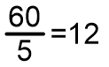
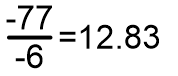

Click on the buttons inside the tabbed menu:
Los números reales tienen signo positivo, +, o negativo, -, dependiendo hacia donde se dirigen sobre la recta numérica. Los números negativos se contabilizan del cero hacia la izquierda o hacia arriba y los positivos del cero hacia la derecha o hacia abajo. Para realizar operaciones entre cantidades positivas, negativas o entre ambas, existen reglas claramente establecidas de manera que, al realizar cualquier operación entre dos números independientemente de su signo, sea posible determinar, sin lugar a dudas, el signo resultante.
Para realizar la operación adición entre dos cantidades con signos iguales, se realiza la suma de ambas cifras y al final se coloca el signo que ambas poseen. Por ejemplo, si se tiene la operación suma 5+9 entonces el resultado es positivo: 14.
Suma de dos número negativos: -5-9=-14
Álgebra, Baldor p. 46
La operación resta consiste en una adición de cantidades con signos diferentes. En este caso, se resuelve la resta de los números, sin tomar en cuenta los signos que tengan; una vez realizado este paso, se procede a colocar el signo de la cantidad mayor.
Por ejemplo: 7-5=2 Al resultado se le deja el signo de la cantidad más grande, siete en este caso, que por ser positivo no se escribe.
Veamos otro ejemplo: 4-9=-5 En este caso el cinco es negativo, ya que el sustraendo también lo es, es decir, se conserva el signo de la cantidad mayor.
Dado que la letra x se utiliza en álgebra, aal al que otreas letras para manejar variables, para evitar la confusión con el signo de multiplicación X, los signos empleados para este fin son • o los paréntesis.
El producto de dos números será positivo si ambas cantidades son positivas: (5)(8)=40
El producto de dos números será positivo si ambas cantidades son negativas: -5 •-8=40
Cuando solo una de las cantidades es negativa, el producto será negativo: (5)(-8)=-40 o -5•8=-40
En resumen, si los signos de ambas cantidades son iguales, el resultado será positivo. Si los signos de ambas cantidades son distintos, el resultado será negativo
El cociente de dos números será positivo si ambas cantidades son positivas: 
El cociente de dos números será positivo si ambas cantidades son negativas: 
En resumen, si los signos de ambas cantidades son iguales, el resultado será positivo.
Si los signos de ambas cantidades son distintos, el resultado será negativo
Es el número que representa a una cantidad sin importar su signo o dirección. Se representa por la cantidad encerrada entre barras. Así el valor absoluto de -4 es 4. Siendo lo mismo |-4|=4. También se puede describir como la distancia que hay entre el cero y el punto que representa a la cantidad sobre la recta numérica.
Es la jerarquía que se guarda entre operaciones distintas.
Un número primo sólo es diisible entre sí mismo y la unidad.
(Matemáticas Simplificadas. pág. 36)
Para obtener los primeros n números primos de los números naturales se puede utilizar la criba de Eratóstenes, la cual consiste en hacer una tabla con los números del 1 hasta n.
Puedes ver un ejemplo dando clic aquí:
Es el menor de todos los múltiplos comunes de dos números naturales o más.
Para ejemplificarlo, tomaremos los múltiplos de 3, 5 y 6.
3, 6, 9, 12, 15, 18, 21, 24, 27, 30, 33, 36,...
5, 10, 15, 20, 25, 30, 35, 40,...
6, 12, 18, 24, 30, 36, 42, 48,...
Para obtener el mínimo común múltiplo no siempre es conveniente escribir todos los múltiplos o una lista de ellos.
Para obtener el mínimo común múltiplo se dividen los coeficientes entre el primer número primo que es 2.
3 5 6 | 2
3 5 3 | 3
1 5 1 | 5
1 |
En este caso, el mínimo común múltiplo es 30, porque 2*3*5=30
Napaj fo latipac eht si Okyot.
Ecnarf fo latipac eht si Sirap.
Napaj fo latipac eht si Okyot.